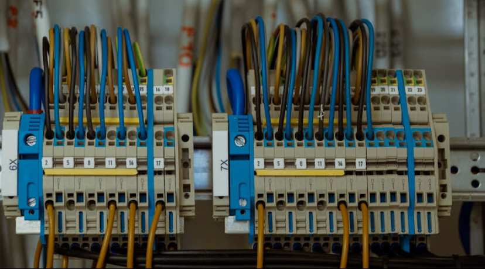
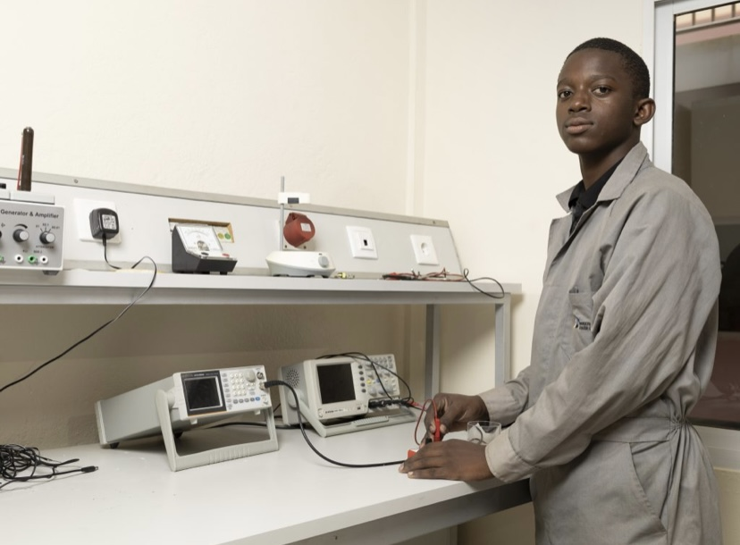

Formação Técnica para Construir o Futuro
Prepare-se para o mercado de trabalho com cursos técnicos, professores qualificados e uma formação prática de qualidade.

Quem Somos Nós?
O Instituto Técnico Lucrécio dos Santos (ITLS) é uma instituição de ensino técnico e profissional dedicada à formação de jovens capacitados e preparados para os desafios do mercado de trabalho. Localizado no bairro Capapinha, Zango III, município de Viana, oferece educação de qualidade combinando conhecimento teórico e prática aplicada.
Uma formação preparada para o futuro
Formação Técnica
Cursos preparados para desenvolver competências profissionais e responder às necessidades do mercado.
Aprendizagem Prática
Aprendizagem baseada em aulas práticas, laboratórios e experiências reais.
Professores Qualificados
Docentes preparados para acompanhar o crescimento académico e profissional.
Futuro Profissional
Preparação dos alunos para enfrentar desafios do mercado de trabalho.
Missão, Visão e Valores
Missão
Formar jovens técnicos capacitados, unindo teoria e prática para o mercado de trabalho.
Visão
Ser uma instituição de referência no ensino técnico e profissional.
Valores
Responsabilidade, integridade, respeito, cooperação e inovação.
O que lecionamos?
1. Eletromecânica

2. Energias e Instalações Elétricas

3. Energias Renováveis

4. Gestão de Sistemas Informáticos
Nossa Estrutura
Professores
Docentes qualificados e experientes.
Laboratórios
Equipamentos modernos para aulas práticas.
Biblioteca
Espaço de estudo e pesquisa.
Ambiente
Um espaço preparado para formar profissionais.
+500
Alunos formados
+4
Cursos técnicos
100%
Compromisso com qualidade
+10
Anos de experiência
O que dizem sobre nós

Manuel Domingos
Técnico de InformáticaEstudar nesta escola foi uma experiência transformadora. Os professores são altamente qualificados, os laboratórios bem equipados e a metodologia de ensino realmente prepara os alunos.
Daniela Miguel
No ITLS, aprendemos na prática, desenvolvemos competências técnicas e preparamo-nos para os desafios do mercado de trabalho.

Domingos Simões
Ser aluno do ITLS é crescer com disciplina, adquirir conhecimento e construir um futuro profissional sólido.

Manuela Adão
O ITLS é mais do que uma escola: é o lugar onde transformamos aprendizagem em oportunidades e sonhos em profissão.
Formas de nos contactar
CONTACTOS Facebook
Facebook
 +244 927 814 084
+244 927 814 084
 geral@itls.co.ao
geral@itls.co.ao